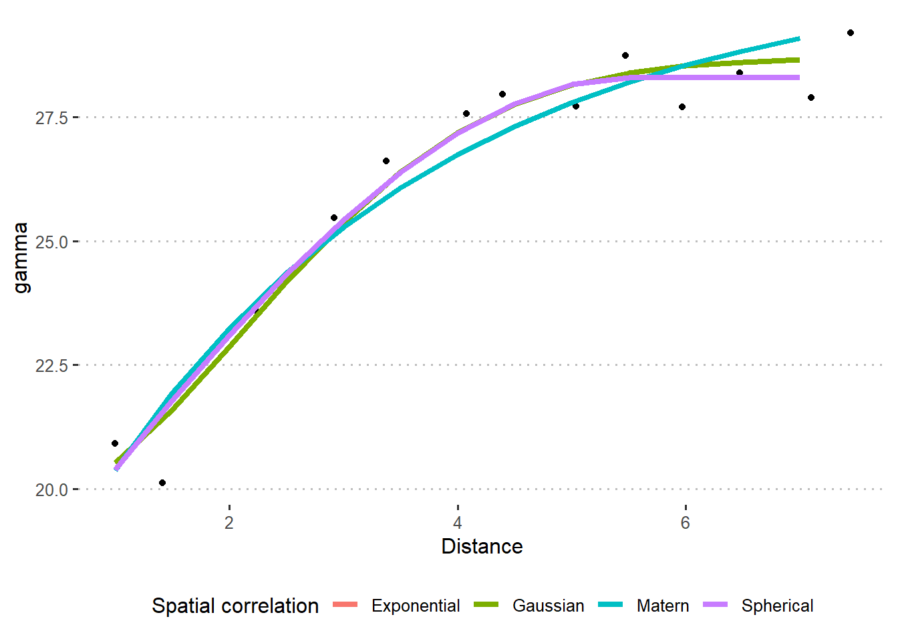

Day 23 Integrating multi-environment trials with weather data
23.1 Announcements
- Office hours tomorrow have moved to 11.30-12.30.
- Project deadlines:
- November 28th: send your project to your classmate(s) for peer review.
- December 5th: return your peer review to your classmate(s).
- December 12th: give your presentation by this date (it can be earlier than this also). You will need to schedule a 30min meeting with me.
- December 19th: submit your final project and tutorial on canvas, including both your classmate’s and my feedback.
23.2 Opportunistic use of multi-environment trials
- Objective of an experiment
- Review of designed experiments
- Bias-Variance tradeoff
- Power in these analyses
##
## Call:
## lm(formula = yield ~ srad_total + ppt_total + factor(hyb), data = d)
##
## Residuals:
## Min 1Q Median 3Q Max
## -2.1482 -0.4294 0.0000 0.4380 1.8558
##
## Coefficients:
## Estimate Std. Error t value Pr(>|t|)
## (Intercept) -60.69421 5.01929 -12.092 < 2e-16 ***
## srad_total 29.73582 2.01150 14.783 < 2e-16 ***
## ppt_total 0.78573 0.11883 6.612 3.70e-10 ***
## factor(hyb)2 4.48472 0.75051 5.976 1.10e-08 ***
## factor(hyb)3 1.52404 0.65572 2.324 0.021166 *
## factor(hyb)4 0.64319 0.75051 0.857 0.392520
## factor(hyb)5 -2.87003 0.64272 -4.465 1.36e-05 ***
## factor(hyb)6 -1.15626 0.64272 -1.799 0.073596 .
## factor(hyb)7 0.96009 0.64272 1.494 0.136878
## factor(hyb)8 -2.78208 0.64272 -4.329 2.42e-05 ***
## factor(hyb)9 -10.40201 0.90894 -11.444 < 2e-16 ***
## factor(hyb)10 -1.13644 0.92639 -1.227 0.221430
## factor(hyb)11 -2.41343 0.68319 -3.533 0.000516 ***
## factor(hyb)12 -4.23456 0.93800 -4.514 1.11e-05 ***
## factor(hyb)13 6.11476 0.63617 9.612 < 2e-16 ***
## factor(hyb)14 -2.50853 0.96169 -2.608 0.009815 **
## factor(hyb)15 -4.25297 0.58881 -7.223 1.18e-11 ***
## factor(hyb)16 -7.72464 0.96768 -7.983 1.30e-13 ***
## factor(hyb)17 3.78123 0.60713 6.228 2.94e-09 ***
## factor(hyb)18 5.02229 0.75550 6.648 3.04e-10 ***
## factor(hyb)19 -2.23794 0.78424 -2.854 0.004799 **
## factor(hyb)20 3.02746 0.71538 4.232 3.59e-05 ***
## factor(hyb)21 -4.70163 0.72448 -6.490 7.22e-10 ***
## factor(hyb)22 -1.74531 0.64657 -2.699 0.007571 **
## factor(hyb)23 1.44812 0.57856 2.503 0.013154 *
## factor(hyb)24 4.72568 0.98698 4.788 3.37e-06 ***
## factor(hyb)25 4.51208 0.67110 6.723 2.00e-10 ***
## factor(hyb)26 -6.35203 0.64657 -9.824 < 2e-16 ***
## factor(hyb)27 2.85905 0.68246 4.189 4.27e-05 ***
## factor(hyb)28 3.69420 0.93439 3.954 0.000108 ***
## factor(hyb)29 4.46544 0.81506 5.479 1.34e-07 ***
## factor(hyb)30 -8.46296 0.75320 -11.236 < 2e-16 ***
## factor(hyb)31 3.31140 0.75051 4.412 1.71e-05 ***
## factor(hyb)32 -4.10483 0.64657 -6.349 1.55e-09 ***
## factor(hyb)33 2.71563 0.78424 3.463 0.000660 ***
## factor(hyb)34 9.05725 0.96889 9.348 < 2e-16 ***
## factor(hyb)35 2.63563 0.71858 3.668 0.000317 ***
## factor(hyb)36 9.73918 0.92639 10.513 < 2e-16 ***
## factor(hyb)37 -2.28390 0.75550 -3.023 0.002846 **
## factor(hyb)38 1.27240 0.66491 1.914 0.057161 .
## factor(hyb)39 -2.61287 0.71683 -3.645 0.000345 ***
## factor(hyb)40 3.51171 0.96889 3.624 0.000371 ***
## factor(hyb)41 -3.98966 0.64272 -6.207 3.28e-09 ***
## factor(hyb)42 -0.42630 0.67561 -0.631 0.528805
## factor(hyb)43 0.48600 0.61137 0.795 0.427644
## factor(hyb)44 -0.58237 0.68137 -0.855 0.393787
## factor(hyb)45 4.15067 0.71683 5.790 2.85e-08 ***
## factor(hyb)46 -3.64700 0.81667 -4.466 1.36e-05 ***
## factor(hyb)47 -0.72016 0.64548 -1.116 0.265957
## factor(hyb)48 -0.84831 0.67275 -1.261 0.208866
## factor(hyb)49 -4.22068 0.67296 -6.272 2.33e-09 ***
## factor(hyb)50 -1.12484 0.60208 -1.868 0.063258 .
## factor(hyb)51 -2.69567 0.63375 -4.254 3.29e-05 ***
## factor(hyb)52 -1.93346 0.55661 -3.474 0.000635 ***
## factor(hyb)53 0.02128 0.64272 0.033 0.973619
## factor(hyb)54 5.52610 0.71858 7.690 7.57e-13 ***
## factor(hyb)55 -10.20572 0.64657 -15.784 < 2e-16 ***
## factor(hyb)56 1.75090 0.75550 2.318 0.021533 *
## factor(hyb)57 -1.29931 0.75500 -1.721 0.086879 .
## factor(hyb)58 1.65498 0.62242 2.659 0.008504 **
## factor(hyb)59 2.70007 0.64657 4.176 4.51e-05 ***
## factor(hyb)60 -4.65485 0.64657 -7.199 1.35e-11 ***
## factor(hyb)61 -2.50210 0.67296 -3.718 0.000264 ***
## factor(hyb)62 -3.38133 0.61137 -5.531 1.04e-07 ***
## factor(hyb)63 -0.65019 0.71538 -0.909 0.364565
## factor(hyb)64 1.03107 0.59772 1.725 0.086144 .
## factor(hyb)65 5.33124 0.93840 5.681 4.93e-08 ***
## factor(hyb)66 -5.10546 0.62532 -8.165 4.28e-14 ***
## factor(hyb)67 5.22070 0.93840 5.563 8.85e-08 ***
## factor(hyb)68 0.94839 0.62532 1.517 0.131007
## factor(hyb)69 2.17529 0.63509 3.425 0.000752 ***
## factor(hyb)70 -0.96006 0.73261 -1.310 0.191615
## factor(hyb)71 1.94152 0.81667 2.377 0.018424 *
## factor(hyb)72 -0.18008 0.60062 -0.300 0.764639
## factor(hyb)73 -1.91320 0.54730 -3.496 0.000588 ***
## factor(hyb)74 -2.21349 0.52530 -4.214 3.87e-05 ***
## factor(hyb)75 -6.69256 0.96768 -6.916 6.80e-11 ***
## factor(hyb)76 -0.44575 0.93800 -0.475 0.635175
## factor(hyb)77 3.10083 0.73261 4.233 3.59e-05 ***
## factor(hyb)78 -1.00358 0.67617 -1.484 0.139399
## factor(hyb)79 4.84662 0.67617 7.168 1.62e-11 ***
## factor(hyb)80 -3.09158 0.65462 -4.723 4.50e-06 ***
## factor(hyb)81 1.34925 0.55397 2.436 0.015785 *
## factor(hyb)82 -0.74675 0.81667 -0.914 0.361666
## factor(hyb)83 3.46643 0.62903 5.511 1.15e-07 ***
## factor(hyb)84 -4.02740 0.74602 -5.398 1.98e-07 ***
## factor(hyb)85 -1.88953 0.95563 -1.977 0.049450 *
## factor(hyb)86 -2.39751 0.57486 -4.171 4.61e-05 ***
## factor(hyb)87 0.62381 0.71538 0.872 0.384307
## factor(hyb)88 -0.37733 0.73261 -0.515 0.607117
## factor(hyb)89 -2.43654 0.64272 -3.791 0.000201 ***
## factor(hyb)90 -2.70215 0.64272 -4.204 4.02e-05 ***
## factor(hyb)91 -4.50509 0.64272 -7.009 4.01e-11 ***
## factor(hyb)92 -7.89450 0.95563 -8.261 2.37e-14 ***
## ---
## Signif. codes: 0 '***' 0.001 '**' 0.01 '*' 0.05 '.' 0.1 ' ' 1
##
## Residual standard error: 0.7872 on 191 degrees of freedom
## Multiple R-squared: 0.9653, Adjusted R-squared: 0.9484
## F-statistic: 57.12 on 93 and 191 DF, p-value: < 2.2e-16m2 <- lmer(yield ~ srad_total + ppt_total + factor(hyb) +
(1|sy),
data = d)
DHARMa::simulateResiduals(m2, plot = T)
## Object of Class DHARMa with simulated residuals based on 250 simulations with refit = FALSE . See ?DHARMa::simulateResiduals for help.
##
## Scaled residual values: 0.532 0.528 0.552 0.448 0.196 0.604 0.128 0.34 0.696 0.296 0.592 0.368 0.452 0.704 0.136 0.276 0.512 0.324 0.364 0.144 ...## Linear mixed model fit by REML ['lmerMod']
## Formula: yield ~ srad_total + ppt_total + factor(hyb) + (1 | sy)
## Data: d
##
## REML criterion at convergence: 537.1
##
## Scaled residuals:
## Min 1Q Median 3Q Max
## -2.6232 -0.5357 0.0000 0.5625 2.2864
##
## Random effects:
## Groups Name Variance Std.Dev.
## sy (Intercept) 0.0912 0.3020
## Residual 0.5826 0.7633
## Number of obs: 285, groups: sy, 16
##
## Fixed effects:
## Estimate Std. Error t value
## (Intercept) -58.38763 7.17973 -8.132
## srad_total 28.89046 2.87023 10.066
## ppt_total 0.78771 0.16758 4.700
## factor(hyb)2 4.34381 0.80391 5.403
## factor(hyb)3 1.30026 0.70485 1.845
## factor(hyb)4 0.50228 0.80391 0.625
## factor(hyb)5 -2.87003 0.62319 -4.605
## factor(hyb)6 -1.15626 0.62319 -1.855
## factor(hyb)7 0.96009 0.62319 1.541
## factor(hyb)8 -2.78208 0.62319 -4.464
## factor(hyb)9 -10.40201 0.88133 -11.803
## factor(hyb)10 -1.38617 0.96221 -1.441
## factor(hyb)11 -3.01797 0.74751 -4.037
## factor(hyb)12 -4.83909 0.97321 -4.972
## factor(hyb)13 5.63725 0.69455 8.116
## factor(hyb)14 -2.81518 0.99068 -2.842
## factor(hyb)15 -4.62097 0.65763 -7.027
## factor(hyb)16 -8.02757 1.02003 -7.870
## factor(hyb)17 3.38958 0.67239 5.041
## factor(hyb)18 4.52533 0.79784 5.672
## factor(hyb)19 -2.54459 0.83076 -3.063
## factor(hyb)20 2.72081 0.77011 3.533
## factor(hyb)21 -4.77889 0.78588 -6.081
## factor(hyb)22 -2.17785 0.68954 -3.158
## factor(hyb)23 1.29865 0.64397 2.017
## factor(hyb)24 4.55199 0.99712 4.565
## factor(hyb)25 4.30745 0.72587 5.934
## factor(hyb)26 -6.78457 0.68954 -9.839
## factor(hyb)27 2.61889 0.71997 3.638
## factor(hyb)28 3.55329 0.96827 3.670
## factor(hyb)29 4.29175 0.83843 5.119
## factor(hyb)30 -8.66084 0.80181 -10.802
## factor(hyb)31 3.17049 0.80391 3.944
## factor(hyb)32 -4.53737 0.68954 -6.580
## factor(hyb)33 2.40898 0.83076 2.900
## factor(hyb)34 8.50653 1.01009 8.422
## factor(hyb)35 2.63563 0.69675 3.783
## factor(hyb)36 9.48946 0.96221 9.862
## factor(hyb)37 -2.78086 0.79784 -3.486
## factor(hyb)38 0.95652 0.71715 1.334
## factor(hyb)39 -2.88135 0.75661 -3.808
## factor(hyb)40 2.96099 1.01009 2.931
## factor(hyb)41 -3.98966 0.62319 -6.402
## factor(hyb)42 -0.74645 0.72544 -1.029
## factor(hyb)43 0.43157 0.67208 0.642
## factor(hyb)44 -0.85947 0.72467 -1.186
## factor(hyb)45 3.88219 0.75661 5.131
## factor(hyb)46 -3.85761 0.86285 -4.471
## factor(hyb)47 -0.80340 0.63635 -1.263
## factor(hyb)48 -1.20209 0.71876 -1.672
## factor(hyb)49 -4.62825 0.72615 -6.374
## factor(hyb)50 -1.37456 0.67809 -2.027
## factor(hyb)51 -3.12280 0.69476 -4.495
## factor(hyb)52 -1.93346 0.53970 -3.582
## factor(hyb)53 0.02128 0.62319 0.034
## factor(hyb)54 5.52610 0.69675 7.931
## factor(hyb)55 -10.63825 0.68954 -15.428
## factor(hyb)56 1.25394 0.79784 1.572
## factor(hyb)57 -1.90384 0.80985 -2.351
## factor(hyb)58 1.36786 0.67695 2.021
## factor(hyb)59 2.26754 0.68954 3.288
## factor(hyb)60 -5.08738 0.68954 -7.378
## factor(hyb)61 -2.90967 0.72615 -4.007
## factor(hyb)62 -3.43575 0.67208 -5.112
## factor(hyb)63 -0.95683 0.77011 -1.242
## factor(hyb)64 0.85349 0.64680 1.320
## factor(hyb)65 4.83428 0.96323 5.019
## factor(hyb)66 -5.38115 0.67549 -7.966
## factor(hyb)67 4.72374 0.96323 4.904
## factor(hyb)68 0.67270 0.67549 0.996
## factor(hyb)69 1.85635 0.69229 2.681
## factor(hyb)70 -0.99164 0.78813 -1.258
## factor(hyb)71 1.73092 0.86285 2.006
## factor(hyb)72 -0.65737 0.66100 -0.995
## factor(hyb)73 -2.14247 0.55117 -3.887
## factor(hyb)74 -2.35766 0.51826 -4.549
## factor(hyb)75 -6.99549 1.02003 -6.858
## factor(hyb)76 -1.05028 0.97321 -1.079
## factor(hyb)77 3.06925 0.78813 3.894
## factor(hyb)78 -1.38186 0.72665 -1.902
## factor(hyb)79 4.46835 0.72665 6.149
## factor(hyb)80 -3.46014 0.69722 -4.963
## factor(hyb)81 1.06771 0.61617 1.733
## factor(hyb)82 -0.95736 0.86285 -1.110
## factor(hyb)83 3.20216 0.68216 4.694
## factor(hyb)84 -4.45452 0.79267 -5.620
## factor(hyb)85 -2.19680 0.99851 -2.200
## factor(hyb)86 -2.39751 0.55740 -4.301
## factor(hyb)87 0.31716 0.77011 0.412
## factor(hyb)88 -0.40892 0.78813 -0.519
## factor(hyb)89 -2.43654 0.62319 -3.910
## factor(hyb)90 -2.70215 0.62319 -4.336
## factor(hyb)91 -4.50509 0.62319 -7.229
## factor(hyb)92 -8.20178 0.99851 -8.214##
## Correlation matrix not shown by default, as p = 94 > 12.
## Use print(x, correlation=TRUE) or
## vcov(x) if you need it23.3 Power analyses
Let’s first review the different types of errors:

Figure 23.1: Types of error
We normally control \(\alpha\), the probability of doing an error of type I. TO describe our experiment’s ability to detect scientific discoveries, we consider power: the \(P(\text{reject } H_0 | H_0 \text{ false}) = 1- \beta\). Very often, research teams consider 0.8 power as the minimum for an experiment.
23.3.1 Power calculations
23.3.1.1 Analytical solutions
t-test
- Used to evaluate differences between treatment effects or means.
- Example testing against zero: \(t^{\star} = \frac{\hat\theta - 0}{s.e.(\hat\theta)} = \frac{\hat\theta - 0}{s.d.(\hat\theta)/\sqrt{n}}\)
- Note the sensibility to sample size.
- Also, remember the \(s.e.(\hat\theta)\) may differ depending on the design:
- \(s.e.(\hat\theta)\) may depend on \(\sigma^2_\varepsilon\) only (e.g., CRD, RCBD, mean comparisons between treatment levels of the treatment at the split-plot level), \(s.e.(\hat\theta) = \sqrt{\frac{2 \sigma^2_{\varepsilon}}{r t}}\).
- \(s.e.(\hat\theta)\) may depend on \(\sigma^2_\varepsilon\) and \(\sigma^2_{whole \ plot}\) (e.g., mean comparisons between treatment levels of the treatment at the whole-plot level), \(s.e.(\hat\theta) = \sqrt{\frac{2 (\sigma^2_{\varepsilon} + b \cdot \sigma^2_w)}{b \cdot r}}\)
To detect a difference \(\delta\): \[n = \frac{2\hat{\sigma}^2}{\delta^2}[t_{\alpha/2, \nu} + t_{\beta, \nu}]^2,\] where:
- \(n\) is the sample size,
- \(\hat\sigma^2\) is the estimate of \(\sigma^2\) based on \(\nu\) degrees of freedom,
- \(\alpha\) is the type I error rate,
- \(\beta\) is the type II error rate,
- And note that: \(Var(\delta)=2\sigma^2/n\).
23.3.1.2 Simulation solutions
Below is a simulation comparing 3 different scenarios of multi-environment trials with different number of environments tested. We assume that, within each environment, the trial is an RCBD with three repetitions. [Context: this is perhaps the most common design in agronomy.]
We assume the following data generating process: \[y_{ijk} = \mu_i + b_{j(k)} + u_k +\varepsilon_{ijk}, \\ b_{j(k)} \sim N(0, \sigma_{b}^2), \\ u_k \sim N(0, \sigma_{u}^2), \\ \varepsilon_{ijk} \sim N(0, \sigma_{\varepsilon}^2),\] where:
- \(\mu_i\) is the treatment mean for the \(i\)th treatment (\(i = 1,2, ..., 30\)),
- \(b_{j(k)}\) is the effect of the \(j\)th block in the \(k\)th environment (\(j = 1,2,3\)),
- \(u_k\) is the effect of the \(k\)th environment (\(k = 1,2,..., E\)), and
- \(\varepsilon_{ijk}\) is the residual for the observation corresponding to the \(i\)th treatment, \(j\)th block in the \(k\)th environment.
For this simulation, we assume that all \(b_{j(k)}\), \(u_k\) and \(\varepsilon_{ijk}\) arise from independent normal distributions, with variances \(\sigma_{b}^2 = 3\), \(\sigma_{u}^2 = 35\), \(\sigma_{\varepsilon}^2 = 10\).
Each simulation consists of 3 steps:
- Set “true” states (i.e., set \(\mu_i\)). We assume the same “ground truth” for all cases. To demonstrate the properties of the designs, we will assume some treatments have no difference (i.e., \(\mu_i = \mu_{i'}\)) and others are different (i.e., \(\mu_i \neq \mu_{i'}\)). Note: this step does not depend on sample size.
- Draw random samples from \(b_{j(k)}\), \(u_k\) and \(\varepsilon_{ijk}\) to simulate observed values \(y_{ijk}\). Note: this step depends on sample size.
- Estimate the \(\mu_i\)s and test the type I error rate (count of times when \(p<0.05\) when the truth was actually \(\mu_i = \mu_{i'}\) – reject \(H_0\) when it was true), and the statistical power (count of times when \(p<0.05\) when the truth was \(\mu_i \ne \mu_{i'}\) – reject \(H_0\) when it was false).
R packages required for this simulation
library(tidyverse) # data wrangling & data viz
library(lme4) # model fitting
library(emmeans) # marginal means Simulate 100 hypothetical experiments for 3 scenarios:
- 10 environments, 3 blocks each
Click to show code for the simulation
sigma_env.truth <- 35
sigma_block.truth <- 3
sigma.truth <- 10
trts <- paste("t", 11:40, sep = "")
n_envs <- 10
n_rep <- 3
n_sims <- 250
df_me <- expand.grid(trt = trts,
rep = 1:n_rep,
environm = paste("e", 11:(10+n_envs), sep = ""))
pval_0diff <- numeric(n_sims)
pval_20diff <- numeric(n_sims)
for (i in 1:n_sims) {
env_re <- rnorm(n_envs, 0, sigma_env.truth)
block_re <- rnorm(n_envs*n_rep, 0, sigma_block.truth)
df_envs <- data.frame(environm = paste("e", 11:(10+n_envs), sep = ""),
env_re)
df_blocks <- expand.grid(environm = paste("e", 11:(10+n_envs), sep = ""),
rep = 1:n_rep) %>%
mutate(block_re = block_re)
df_me <- df_me %>%
mutate(mu_t = case_when(trt == "t11" ~ 200,
trt == "t12" ~ 200,
trt == "t13" ~ 180,
.default = 220)) %>%
left_join(df_envs) %>%
left_join(df_blocks) %>%
mutate(e = rnorm(nrow(df_me), 0, sigma.truth),
y = mu_t + env_re + block_re + e)
m <- lmer(y ~ trt + (1|environm/rep), data = df_me)
pval_0diff[i] <- as.data.frame(emmeans(m, ~ trt, contr = list(c(1, -1, rep(0, 28))))$contr)$p.value
pval_20diff[i] <- as.data.frame(emmeans(m, ~ trt, contr = list(c(1, 0, 0, -1, rep(0, 26))))$contr)$p.value
} 

## [1] 0.056## [1] 1- 2 environments, 3 blocks each
Click to show code for the simulation
sigma_env.truth <- 35
sigma_block.truth <- 3
sigma.truth <- 10
trts <- paste("t", 11:40, sep = "")
n_envs <- 2
n_rep <- 3
n_sims <- 100
df_me <- expand.grid(trt = trts,
rep = 1:n_rep,
environm = paste("e", 11:(10+n_envs), sep = ""))
pval_0diff <- numeric(n_sims)
pval_20diff <- numeric(n_sims)
set.seed(3)
for (i in 1:n_sims) {
env_re <- rnorm(n_envs, 0, sigma_env.truth)
block_re <- rnorm(n_envs*n_rep, 0, sigma_block.truth)
df_envs <- data.frame(environm = paste("e", 11:(10+n_envs), sep = ""),
env_re)
df_blocks <- expand.grid(environm = paste("e", 11:(10+n_envs), sep = ""),
rep = 1:n_rep) %>%
mutate(block_re = block_re)
df_me <- df_me %>%
mutate(mu_t = case_when(trt == "t11" ~ 200,
trt == "t12" ~ 200,
trt == "t13" ~ 180,
.default = 220)) %>%
left_join(df_envs) %>%
left_join(df_blocks) %>%
mutate(e = rnorm(nrow(df_me), 0, sigma.truth),
y = mu_t + env_re + block_re + e)
m <- lmer(y ~ trt + (1|environm/rep), data = df_me)
pval_0diff[i] <- as.data.frame(emmeans(m, ~ trt, contr = list(c(1, -1, rep(0, 28))))$contr)$p.value
pval_20diff[i] <- as.data.frame(emmeans(m, ~ trt, contr = list(c(1, 0, 0, -1, rep(0, 26))))$contr)$p.value
}

## [1] 0.05## [1] 0.9- 1 environment, 3 blocks each
Click to show code for the simulation
sigma_env.truth <- 35
sigma_block.truth <- 3
sigma.truth <- 10
trts <- paste("t", 11:40, sep = "")
n_envs <- 1
n_rep <- 3
n_sims <- 100
df_me <- expand.grid(trt = trts,
rep = 1:n_rep,
environm = paste("e", 11:(10+n_envs), sep = ""))
pval_0diff <- numeric(n_sims)
pval_20diff <- numeric(n_sims)
set.seed(3)
for (i in 1:n_sims) {
env_re <- rnorm(n_envs, 0, sigma_env.truth)
block_re <- rnorm(n_envs*n_rep, 0, sigma_block.truth)
df_envs <- data.frame(environm = paste("e", 11:(10+n_envs), sep = ""),
env_re)
df_blocks <- expand.grid(environm = paste("e", 11:(10+n_envs), sep = ""),
rep = 1:n_rep) %>%
mutate(block_re = block_re)
df_me <- df_me %>%
mutate(mu_t = case_when(trt == "t11" ~ 200,
trt == "t12" ~ 200,
trt == "t13" ~ 180,
.default = 220)) %>%
left_join(df_envs) %>%
left_join(df_blocks) %>%
mutate(e = rnorm(nrow(df_me), 0, sigma.truth),
y = mu_t + env_re + block_re + e)
m <- lmer(y ~ trt + (1|rep), data = df_me)
pval_0diff[i] <- as.data.frame(emmeans(m, ~ trt, contr = list(c(1, -1, rep(0, 28))))$contr)$p.value
pval_20diff[i] <- as.data.frame(emmeans(m, ~ trt, contr = list(c(1, 0, 0, -1, rep(0, 26))))$contr)$p.value
}

## [1] 0.05## [1] 0.67